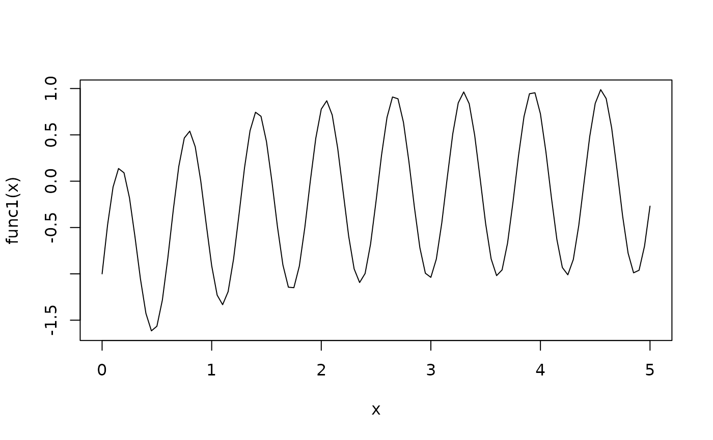

Get the optimal forward difference interval by Gill83 method
Source:R/nlmixrGrad.R
nlmixr2Gill83.RdGet the optimal forward difference interval by Gill83 method
Usage
nlmixr2Gill83(
what,
args,
envir = parent.frame(),
which,
gillRtol = sqrt(.Machine$double.eps),
gillK = 10L,
gillStep = 2,
gillFtol = 0
)Arguments
- what
either a function or a non-empty character string naming the function to be called.
- args
a list of arguments to the function call. The
namesattribute ofargsgives the argument names.- envir
an environment within which to evaluate the call. This will be most useful if
whatis a character string and the arguments are symbols or quoted expressions.- which
Which parameters to calculate the forward difference and optimal forward difference interval
- gillRtol
The relative tolerance used for Gill 1983 determination of optimal step size.
- gillK
The total number of possible steps to determine the optimal forward/central difference step size per parameter (by the Gill 1983 method). If 0, no optimal step size is determined. Otherwise this is the optimal step size determined.
- gillStep
When looking for the optimal forward difference step size, this is This is the step size to increase the initial estimate by. So each iteration the new step size = (prior step size)*gillStep
- gillFtol
The gillFtol is the gradient error tolerance that is acceptable before issuing a warning/error about the gradient estimates.
Value
A data frame with the following columns:
- info Gradient evaluation/forward difference information
- hf Forward difference final estimate
- df Derivative estimate
- df2 2nd Derivative Estimate
- err Error of the final estimate derivative
- aEps Absolute difference for forward numerical differences
- rEps Relative Difference for backward numerical differences
- aEpsC Absolute difference for central numerical differences
- rEpsC Relative difference for central numerical differences
The info returns one of the following:
- "Not Assessed" Gradient wasn't assessed
- "Good Success" in Estimating optimal forward difference interval
- "High Grad Error" Large error; Derivative estimate error fTol or more of the derivative
- "Constant Grad" Function constant or nearly constant for this parameter
- "Odd/Linear Grad" Function odd or nearly linear, df = K, df2 ~ 0
- "Grad changes quickly" df2 increases rapidly as h decreases
Examples
## These are taken from the numDeriv::grad examples to show how
## simple gradients are assessed with nlmixr2Gill83
nlmixr2Gill83(sin, pi)
#> Gill83 Derivative/Forward Difference
#> (rtol=1.49011611938477e-08; K=10, step=2, ftol=0)
#>
#> info hf hphi df df2 err aEps
#> 1 Odd/Linear Grad 2.237911e-11 1.118956e-11 -1 0 1.630865e-13 5.403504e-12
#> rEps aEpsC rEpsC f
#> 1 5.403504e-12 5.403504e-12 5.403504e-12 1.224647e-16
nlmixr2Gill83(sin, (0:10)*2*pi/10)
#> Gill83 Derivative/Forward Difference
#> (rtol=1.49011611938477e-08; K=10, step=2, ftol=0)
#>
#> info hf hphi df df2
#> 1 Grad changes quickly 1.045337e-07 5.226686e-08 1.0000000 8.796093e+12
#> 2 Grad changes quickly 1.702142e-07 8.510710e-08 0.8090170 4.254583e+19
#> 3 Grad changes quickly 2.358947e-07 1.179473e-07 0.3090168 3.584264e+19
#> 4 Grad changes quickly 3.015752e-07 1.507876e-07 -0.3090171 2.193033e+19
#> 5 Grad changes quickly 3.672556e-07 1.836278e-07 -0.8090173 9.139274e+18
#> 6 Grad changes quickly 4.329361e-07 2.164681e-07 -1.0000004 7.692125e+11
#> 7 Grad changes quickly 4.986166e-07 2.493083e-07 -0.8090174 -4.958098e+18
#> 8 Grad changes quickly 5.642971e-07 2.821485e-07 -0.3090169 -6.263551e+18
#> 9 Grad changes quickly 6.299776e-07 3.149888e-07 0.3090172 -5.025578e+18
#> 10 Grad changes quickly 6.956580e-07 3.478290e-07 0.8090169 -2.547164e+18
#> 11 Good 2.441411e-04 7.796106e-04 1.0000000 4.583226e-08
#> err aEps rEps aEpsC rEpsC
#> 1 4.597442e+05 1.045337e-07 1.045337e-07 1.045337e-07 1.045337e-07
#> 2 3.620952e+12 1.045337e-07 1.045337e-07 1.045337e-07 1.045337e-07
#> 3 4.227544e+12 1.045337e-07 1.045337e-07 1.045337e-07 1.045337e-07
#> 4 3.306821e+12 1.045337e-07 1.045337e-07 1.045337e-07 1.045337e-07
#> 5 1.678225e+12 1.045337e-07 1.045337e-07 1.045337e-07 1.045337e-07
#> 6 1.665099e+05 1.045337e-07 1.045337e-07 1.045337e-07 1.045337e-07
#> 7 1.236095e+12 1.045337e-07 1.045337e-07 1.045337e-07 1.045337e-07
#> 8 1.767252e+12 1.045337e-07 1.045337e-07 1.045337e-07 1.045337e-07
#> 9 1.583001e+12 1.045337e-07 1.045337e-07 1.045337e-07 1.045337e-07
#> 10 8.859777e+11 1.045337e-07 1.045337e-07 1.045337e-07 1.045337e-07
#> 11 1.118954e-11 3.352119e-05 3.352119e-05 3.352119e-05 3.352119e-05
#> f
#> 1 -4.583242e-08
#> 2 -4.583242e-08
#> 3 -4.583242e-08
#> 4 -4.583242e-08
#> 5 -4.583242e-08
#> 6 -4.583242e-08
#> 7 -4.583242e-08
#> 8 -4.583242e-08
#> 9 -4.583242e-08
#> 10 -4.583242e-08
#> 11 -4.583242e-08
func0 <- function(x){ sum(sin(x)) }
nlmixr2Gill83(func0 , (0:10)*2*pi/10)
#> Gill83 Derivative/Forward Difference
#> (rtol=1.49011611938477e-08; K=10, step=2, ftol=0)
#>
#> info hf hphi df df2
#> 1 Grad changes quickly 7.391651e-08 3.695825e-08 1.0000000 1.203250e+17
#> 2 Grad changes quickly 1.203596e-07 6.017981e-08 0.8090168 4.538135e+16
#> 3 Grad changes quickly 1.668027e-07 8.340136e-08 0.3090166 2.362831e+16
#> 4 Grad changes quickly 2.132458e-07 1.066229e-07 -0.3090170 1.445699e+16
#> 5 Grad changes quickly 2.596889e-07 1.298445e-07 -0.8090170 9.748364e+15
#> 6 Odd/Linear Grad 3.061321e-07 1.530660e-07 -1.0000000 0.000000e+00
#> 7 High Grad Error 4.821089e-08 3.525752e-07 -0.8090170 5.876689e-01
#> 8 High Grad Error 3.788199e-08 3.990183e-07 -0.3090170 9.518254e-01
#> 9 Good 3.789588e-08 4.454614e-07 0.3090170 9.511281e-01
#> 10 Good 4.818847e-08 4.919045e-07 0.8090170 5.882158e-01
#> 11 Good 1.726341e-04 5.512680e-04 1.0000000 4.583208e-08
#> err aEps rEps aEpsC rEpsC
#> 1 4.447003e+09 7.391651e-08 7.391651e-08 7.391651e-08 7.391651e-08
#> 2 2.731041e+09 7.391651e-08 7.391651e-08 7.391651e-08 7.391651e-08
#> 3 1.970634e+09 7.391651e-08 7.391651e-08 7.391651e-08 7.391651e-08
#> 4 1.541446e+09 7.391651e-08 7.391651e-08 7.391651e-08 7.391651e-08
#> 5 1.265771e+09 7.391651e-08 7.391651e-08 7.391651e-08 7.391651e-08
#> 6 2.230920e-09 7.392210e-08 7.392210e-08 7.392210e-08 7.392210e-08
#> 7 2.833204e-08 1.010729e-08 1.010729e-08 1.010729e-08 1.010729e-08
#> 8 3.605704e-08 7.017484e-09 7.017484e-09 7.017484e-09 7.017484e-09
#> 9 3.604383e-08 6.288156e-09 6.288156e-09 6.288156e-09 6.288156e-09
#> 10 2.834522e-08 7.241087e-09 7.241087e-09 7.241087e-09 7.241087e-09
#> 11 7.912182e-12 2.370311e-05 2.370311e-05 2.370311e-05 2.370311e-05
#> f
#> 1 -2.291621e-08
#> 2 -2.291621e-08
#> 3 -2.291621e-08
#> 4 -2.291621e-08
#> 5 -2.291621e-08
#> 6 -2.291621e-08
#> 7 -2.291621e-08
#> 8 -2.291621e-08
#> 9 -2.291621e-08
#> 10 -2.291621e-08
#> 11 -2.291621e-08
func1 <- function(x){ sin(10*x) - exp(-x) }
curve(func1,from=0,to=5)

x <- 2.04
numd1 <- nlmixr2Gill83(func1, x)
exact <- 10*cos(10*x) + exp(-x)
c(numd1$df, exact, (numd1$df - exact)/exact)
#> [1] 0.332398077 0.333537144 -0.003415112
x <- c(1:10)
numd1 <- nlmixr2Gill83(func1, x)
exact <- 10*cos(10*x) + exp(-x)
cbind(numd1=numd1$df, exact, err=(numd1$df - exact)/exact)
#> numd1 exact err
#> [1,] -8.022836 -8.022836 -1.369260e-11
#> [2,] 4.216156 4.216156 -2.839580e-11
#> [3,] 1.592302 1.592302 -1.150871e-11
#> [4,] -6.651065 -6.651065 -4.125002e-11
#> [5,] 9.656398 9.656398 -5.172856e-11
#> [6,] -9.521651 -9.521651 2.985064e-10
#> [7,] 6.334104 6.334104 -8.697948e-11
#> [8,] -1.103537 -1.103537 -9.731425e-11
#> [9,] -4.480613 -4.480613 -1.320695e-10
#> [10,] 8.623852 8.623234 7.167430e-05
sc2.f <- function(x){
n <- length(x)
sum((1:n) * (exp(x) - x)) / n
}
sc2.g <- function(x){
n <- length(x)
(1:n) * (exp(x) - 1) / n
}
x0 <- rnorm(100)
exact <- sc2.g(x0)
g <- nlmixr2Gill83(sc2.f, x0)
max(abs(exact - g$df)/(1 + abs(exact)))
#> [1] 0.001159854